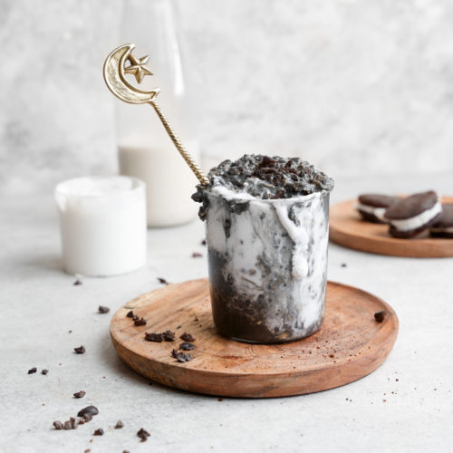

Cookies and Cream Overnight Oats

Description
Learn how to make some of the most delicious overnight oats.
This cookies and cream flavored oatmeal will bless your tastebuds with a
wonderful sweet taste.
Ingredients
- 1/2 cup Old fashion Oats
- 2 tsp Oreo pudding mix
- 1 tsp Chia seeds
- 3/4 cup Milk
- 1/2 cup Greek Yogurt
- 3 Oreo cookies crushed
Instructions
- Find a container you will store your overnight oats in
- Place oats in the container
- Top with 2 tablespoons of Oreo pudding mix
- Add chia seeds
- Pour milk in and seal container
- Place in fridge overnight or for at least 4 hours
- When the oats are ready top with yogurt and crushed oreos